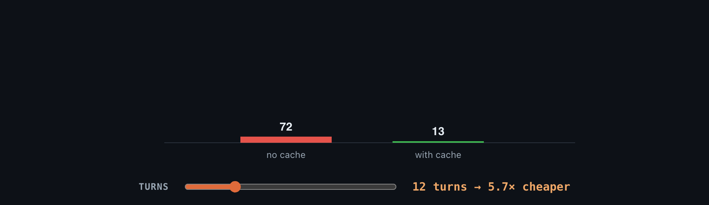

Stop reading walls of text.
Just show me.
Two Claude Code skills that make your AI agent draw the answer instead of dumping markdown: interactive visuals you can poke, and hand-inked slide stories for your PRs.
1 · Iterate on plans with visuals you can poke
visualize builds interactive HTML. Sometimes a diagram isn't enough — you need to feel it. Your agent hands you an interactive widget: hover it, toggle it, drag it, and the problem and the solution land in seconds. Then you say “no, do it this way” and it re-renders. Here's a real one — an “undo send” grace window you grasp by feeling it for five seconds.

Six primitives, nothing decorative
Every visualize visual is composed from a small kit of proven, self-contained primitives — so output stays clean instead of drifting into clip-art.





2 · Your PRs tell the story in hand-inked slides
pixelviz draws the change as a few 1920×1080 slides: paper for the story, blueprint for the mechanism, a lens on the culprit, dimension lines on what was measured. Each slide animates in steps you can pause and read, and ends on a poster that tells the whole story alone, so it doubles as the PR screenshot. Frames render from code, are linted for overlaps and clipping, checked for determinism, and exported as PNG posters plus a small deck.mp4 that GitHub plays inline.
In a PR, embed the GIF of the slide that carries the decision, which autoplays inline, and attach deck.mp4 below it for the full story. Drag the files into the description, or upload them from the terminal with gh-img.
Install
The whole point: tell your agent “install theolundqvist/justshowme” and it sets itself up. Or do it by hand:
# 1. Copy both skills into your skills dir (the clone is just staging) git clone https://github.com/theolundqvist/justshowme /tmp/justshowme mkdir -p ~/.claude/skills cp -r /tmp/justshowme/skills/visualize /tmp/justshowme/skills/pixelviz ~/.claude/skills/ # 2. pixelviz renders with Playwright and ffmpeg (cd ~/.claude/skills/pixelviz && npm i && npx playwright install --only-shell chromium) ffmpeg -version # brew install ffmpeg / apt install ffmpeg # 3. PR uploads from the terminal (optional) gh extension install theolundqvist/gh-img # 4. Make it the default — paste docs/AGENTS-snippet.md # into your ~/.claude/CLAUDE.md (or AGENTS.md) # 5. Drop the staging clone rm -rf /tmp/justshowme
Works in any agent harness that reads a SKILL.md. Self-contained HTML output — no build step.